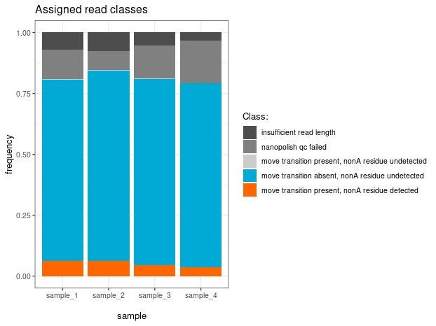
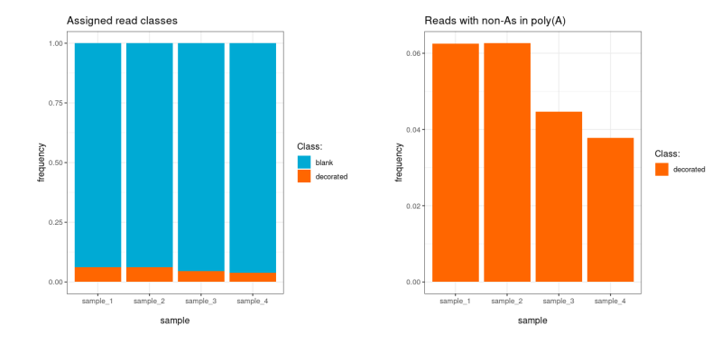
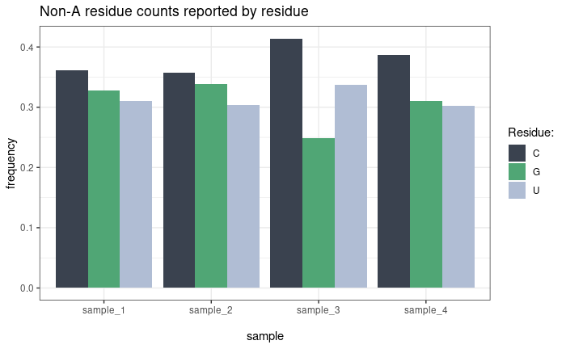
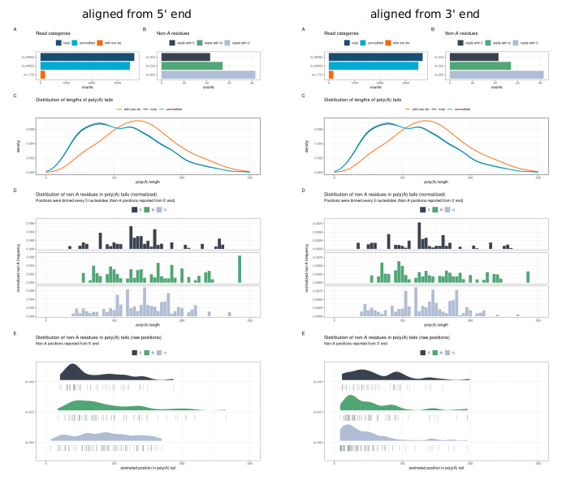
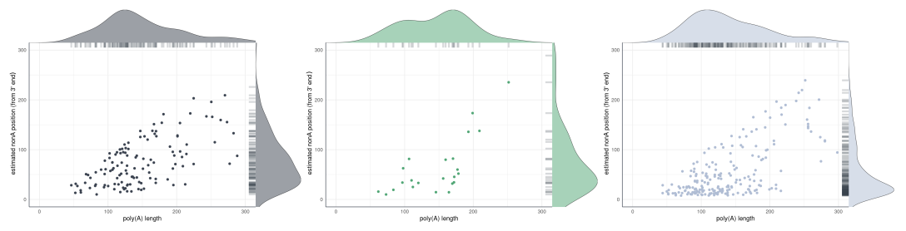
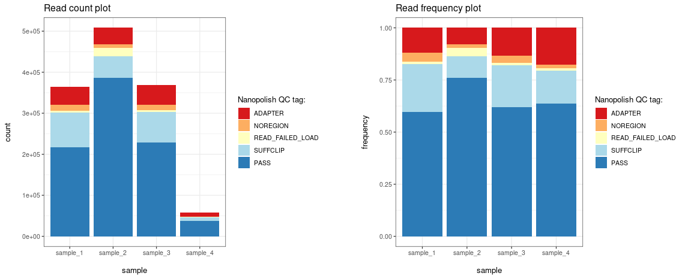

Read classification
Ninetails provides insights into the non-adenosine
landscape of sequenced samples. The plot_class_counts()
function produces graphical representations of read classification
results. The type argument controls the level of
detail:
-
type = "R"— detailed view: all comment codes shown (YAY, MAU, MPU, IRL, UNM, BAC) -
type = "N"— coarser view: three classes only (decorated, blank, unclassified) -
type = "A"— decorated reads only
Detailed classification
All reads — decorated, blank, and those that could not be classified — are included and colour-coded by their comment code.
plt1 <- ninetails::plot_class_counts(class_data = class_data,
grouping_factor = "sample_name",
frequency = TRUE,
type = "R")
print(plt1)
Less detailed classification
With type = "N", only the three top-level classes are
shown, making it easier to compare the proportion of decorated reads
across samples.
plt1 <- ninetails::plot_class_counts(class_data = class_data,
grouping_factor = "sample_name",
frequency = TRUE,
type = "N")
print(plt1)
Residue classification
The plot_residue_counts() function plots the frequency
or counts of each predicted non-adenosine residue type (C, G, U).
plt1 <- ninetails::plot_residue_counts(residue_data = residue_data,
grouping_factor = "sample_name")
print(plt1)
Plot panel characteristics
The plot_panel_characteristics() function produces a
multi-panel summary of the full tail composition for a dataset or subset
(e.g. a single sample, group, or transcript). The resulting plot can be
aligned from either the 5’ or 3’ end of the tail.
plt <- ninetails::plot_panel_characteristics(
input_residue_data = residue_data,
input_class_data = class_data,
input_merged_nonA_tables_data = NULL,
type = "default",
max_length = 100,
direction_5_prime = TRUE
)
print(plt)The panel contains the following subplots:
- A — read counts
- B — frequency of non-adenosine residues
- C — poly(A) tail length distribution
- D — normalised distribution of non-adenosines (binned and normalised by length)
- E — raw distribution of non-adenosines

Position scatterplot
The plot_rug_density() function visualises non-adenosine
positions relative to tail lengths, combining a scatterplot, density
plot, and rug in one figure. Call the function once per nucleotide
type.
plt <- ninetails::plot_rug_density(residue_data = residue_data,
base = "C",
max_length = 100)
print(plt)
Non-A abundance
The plot_nonA_abundance() function visualises the
overall abundance of non-adenosine residues across samples.
plt <- ninetails::plot_nonA_abundance(residue_data = residue_data,
grouping_factor = "sample_name")
print(plt)Tail length distribution
The plot_tail_distribution() function plots the
distribution of poly(A) tail lengths across samples.
plt <- ninetails::plot_tail_distribution(input_data = class_data,
grouping_factor = "sample_name")
print(plt)Nanopolish QC tags
Note
This section applies only to the Guppy legacy pipeline (
check_tails_guppy()).
The nanopolish_qc() and
plot_nanopolish_qc() functions allow visualisation of QC
tags assigned by the Nanopolish polya function, either by read count or
by frequency.
# Summarise QC tags per sample
qc_summary <- ninetails::nanopolish_qc(class_data,
grouping_factor = "sample_name")
# Plot by read count
plt1 <- ninetails::plot_nanopolish_qc(qc_summary, frequency = FALSE)
# Plot by frequency
plt2 <- ninetails::plot_nanopolish_qc(qc_summary, frequency = TRUE)
print(plt1)
print(plt2)